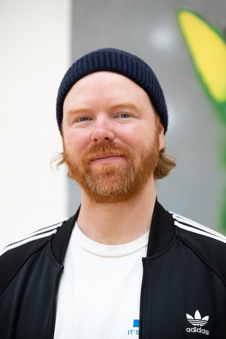

About
I paint to build worlds. Sometimes they look vast and cinematic, sometimes they’re stripped back to a single figure on a quiet ground, but they all belong to the same unfolding universe. I’m not interested in just making images, I want to create places that feel discovered rather than designed. My work often circles around the strange, the mythical, the half-seen. Cryptids, impossible botanicals, solitary forms, each one a fragment of a larger ecology that exists just beyond the edge of our own.
What drives me is the idea of immersion. I want the viewer to feel like they’ve stepped into something, not just looked at it. Even the simplest composition is part of a wider narrative, a hint of a story still in motion. Through paint, I’m trying to open a doorway.
Bio
Adam S. Forsythe (b. 1981) is a contemporary fine artist based in Bristol, England. His work has been exhibited in the UK, Europe and North America.
